Горная Шория . Шерегеш-2007
Знакомство
Судя по опыту прошлых походов и покатушек могу смело сказать - если пойти в горы одному, то можно найти не только приключения на свою ж..., но и хороших знакомых, а то и друзей на всю жизнь... А.Б.
11.12.2007 - Приехал во вторник в обед, добирался своим ходом из Новокузнецка, где гостил у двоюродных братьев. В руке доска Rome Anthem 154 - купил недавно в Новосибе, где гостил у сестры :) В Шерегеше для меня все новое и незнакомое, но радовало наличие сотового контакта в Вовой Петуниным и мелькание знакомых курток на улицах города - в воскресенье в этом околокурортном городке поселилось 15 иркутян и ангарчан :) Бросил вещи у них на квартире и поехал на гору...
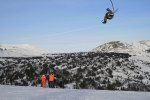
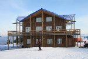
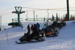
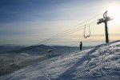
На гору Зеленую завозят несколько канатных дорог,
на самой вершине есть
несколько кафешек и много снегоходчикоф-таксистоф :) В первые дни снежная обстановка на трассах была очень закатанная, главные трассы не ратрачили и они были все в буграх. Трассы "Сектора Е" ратрачили, но на них были камни.
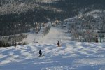
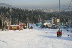
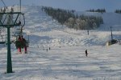
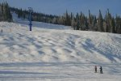
Конкуренция между владельцами канатных дорог и пунктами проката делает свое дело - цены ниже, а качество лучше по сравнению с Байкальском. На бугеле был всего два раза за все дни, в основном креселки и гандолки :) Добавим сюда возможность катания фрирайда по полям и по лесу - получаем еще и Мамай! Это просто офигенно :)
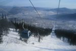
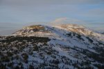
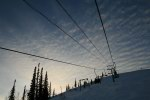
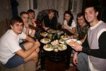
В общем, откатал один день, осмотрелся, нашел иркутян, познакомился, вписался на 3-м этаже. Они снимали в "пентагоне" две 4-комнатные квартиры, вторая на 2-м этаже. Обстановка дружная, еда домашняя, питье коньячное и пивное :)
12.12.2007
- Если вчера было солнечно, то сегодня стало пасмурно. Но снегом еще только пахло, все его ждали от свежего ветра. Потому как без снега кататься было очень напряжно, даже фрирайд по лесу был уже не фрирайдом, потому что между деревьями все закатано было. Это только бывалые ангарские партизаны Нестер и Саня Сахаровский где-то находили нетронутую целину и скромно делились ею с теми иркутянами, кому была не страшна получасовая тропежка.
Я же активно изучал новые трассы в компании Вовы и Гриши, а также других товарищей по квартире - Андрей, Антон, Вера, Наташа и Андрей. Катание по закатанному снегу - это конечно "жесть, как она есть", и я уже строил планы на завтра прогуляться по хребту в сторону Мустага и Креста, чтобы ноги отдохнули, а то ноги же на трассах впервые в этом сезоне и уже стали "забиваться" ...
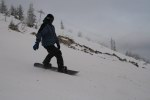
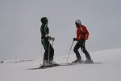
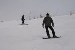
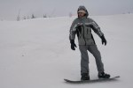
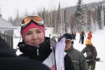
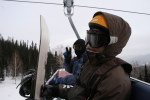
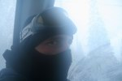
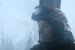
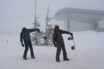
Добили жесткий день с Вовой и Гришей на самой длинной
трассе в России - 4 км. Ну дык, "Сектор Е"! Правда подъемник космического
вида из-за ветра не работал весь день, но мы вызвонили такси и в сумерках
поехали в "номера"...
Холодный ветер выдул лично из меня все что можно, и наверное не только из меня, потому как народ вечером собрался в баню. Точнее половина народа собралась (2этаж), остальная половина (3 этаж) решила пить караоке и петь пиво :) Баня, баня и еще раз баня, какое нафиг караоке! Не раздумывая согласился на симпатичное предложение погреть косточки в парилке, о чем до сих пор не жалею. Супер-парильщик Игорь (Гоха) без устали парил всех подряд, в чем ему выражаю благодарность, потому как я обычно сам всех парю, а меня редко кто. А самое главное было после бани - то, чего я долго ждал, и как оказалось не только я... Пошел снег, мягкими пушистыми хлопьями, много снега... Прогулка после бани под снегопадом... и многое стало по другому, совсем по другому :)
Продолжение истории - Белая Снежная Радость . . .
Декабрь 2007
Фото Алексей Белокрылов